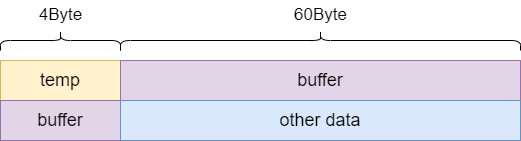

Cache一致性
本文最后更新于：2023年11月13日 下午
1. Cache 的 invalidate & clean
- invalidate
- 将相应位置的cacheline状态置为无效，将valid bit置为0. 并不需要清除相应位置的cacheline数据。
- 复位之后，需要将所有的cacheline的valid信号置为0，防止复位后，cache命中拿到错误未定义的数据。
- clean
- 将dirty bit 为1的cacheline写回主存中，同时拉低cacheline的dirty bit，通过这种方式可以将cache中的数据和主存中数据保持一致（针对写回策略）。
2. Cache & DMA一致性
- DMA & Cache
- Cache的总线监视技术
- 为了解决上面Cache和DMA不一致的问题，可以在DMA通过总线获取数据时，先检查cache是否命中，如果命中的话，数据应该来自cache而不是主存。
- 可以通过cache的总线监视技术实现，cache控制器会监视总线上的每一条内存访问，检查是否命中，根据命中情况做下一步操作。
- DMA操作的是物理地址，cache若想监视DMA的访问地址，那么需要Cache也是按照物理地址进行查找的，所以选择PIPT Cache结构。
- 对于一些已经设计完成的硬件电路，并不支持总线监视技术，那么也可以通过其它方式避免DMA和Cache不一致的问题。
- No Cache
- 这篇博客中有介绍DMA在主存中实现双缓冲用做主存到IO口/IO口到主存的数据传输，为了避免cache的影响，我们可以选择将这段内存映射为no cache。
- 这种方法很简单实用，但缺点是：如果偶尔使用DMA，但将缓冲区一段的内存设为nocache，导致 CPU Register-主存 的性能损失。
- 软件维护一致性
- 为了避免No
Cache带来的性能损失，可以选择映射仍采用cache的方式，根据DMA传输方向不同分情况讨论。
- DMA传输方向为：I/O -> 内存(DMA Buffer)
- 在DMA传输之前，可以invalidate DMA buffer段的cache。
- 在DMA传输完成之后，由于buffer对应段的cacheline valid置为0，数据需要重新加载，并将valid重新置为1.这样CPU读cache中的数据就不会读到过时的数据了。
- DMA传输方向为：内存(DMA Buffer) -> I/O
- 在DMA传输前，可以clean DMA buffer段的cache。
- 将cache中dirty bit被拉高的cache line写回主存中，这样在DMA传输时，就不会将主存中过时数据发送到I/O设备。
- DMA传输方向为：I/O -> 内存(DMA Buffer)
- 注意：在DMA传输没有完成期间，我们需要保证CPU不要访问DMA Buffer。因为可能CPU读走的数据并不是最终完成DMA传输的数据，导致程序错误。
- 为了避免No
Cache带来的性能损失，可以选择映射仍采用cache的方式，根据DMA传输方向不同分情况讨论。
- DMA Buffer对齐
- 实例可以看这篇文章。
- 简要概述一下文章中描述的情况，如下：
若未对齐，那么变量temp和buffer在cacheline中的存放如下图所示。
现DMA进行外设->内存传输数据到buffer变量中。
但在传输过程中，DMA传输到buff[3]时，CPU对temp的进行改动；之后DMA传输到buff[50]时，由于其它操作可能需要替换掉temp所在cacheline，发现dirty bit被拉高，便需要将该行cacheline写回。这个过程都发生在DMA传输过程中。
从图中可以看到写回的时buffer[0]-buffer[59],直接覆盖掉DMA从外设传输过来的buffer值。
可以通过对齐DMA buffer来解决这个问题，即让buffer变量不和其它数据公用一个cacheline。

3. ICache 和 DCache 一致性
- 这篇博客中有介绍，在CPU的L1 Cache会单独分为ICache和DCache。而L2和L3不会区分ICache和DCache。
- ICache的歧义和别名
- 歧义和别名在这篇博客中有介绍。
- 歧义可以通过 Physical Tag 解决，对于VIPT型Cache，仍然存在别名的问题。
- 考虑到ICache的Read Only特性，所以即使两个Cache line上缓存一个物理地址上的数据也没有关系。
- 不一致性的情况
- 程序在执行过程中，指令一般不会修改，此时不会出现一致性问题。
- 但是对于一些特殊情况：self-modifying
code，在执行时会修改自己的指令，它们修改指令的过程为：
- 将需要修改的指令加载到dCache中。
- 修改成新指令，写回dCache。
- 可能会出现的问题
- 如果旧指令已经缓存在iCache中。那么对于程序执行来说依然会命中iCache。这不是我们想要的结果。
- 如果旧指令没有在iCache中，那么CPU会去主存中取指令数据，而如果dCache采用的是写回策略，那么指令会被写回到dCache，而不会写回主存，那么从主存中取出的指令也不是想要的。
- 不一致性的解决方案
- 硬件维护
- 硬件上让iCache和dCache之间通信。
- 每一次修改dCache数据时，去查一下iCache是否命中；如果命中，那么也更新一下iCache。
- 当加载指令时，先去查找iCache中是否命中，如果没有命中，再去dCache中查找。如果都没有命中再去查找主存。
- 但是self-modifying code是少数，为了解决少数的情况，却给硬件带来了很大的负担。
- 软件维护
- 可以通过下面的步骤维护一致性。
- （1）将需要修改的指令数据加载到dCache中。
- （2）修改成新指令，写回dCache。
- （3）clean dCache中修改的指令对应的cacheline，保证dCache中新指令写回主存。
- （4）invalid iCache中修改的指令对应的cacheline，保证从主存中读取新指令。
- 可以通过下面的步骤维护一致性。
- 硬件维护
4. 多核Cache一致性
- 每个CPU之间都有一个L1 Cache，如果为多核，需要考虑多核Cache之间的一致性。
- 不一致性的情况
- 假设存在两个CPU，都有对应的L1 Cache。首先两个CPU都读取了0x40地址数据，CPU从主存加载数据到对应的Cache Line中。
- 采用写回策略，CPU0写数据会更新其对应的L1_Cahce0，dirty bit被拉高。之后CPU1发现命中了L1_Cache1，将未被修改的值读出。导致数据读出错误。
- 解决思路
- 思路一：CPU0修改0x40的时候，除了更新CPU0的Cache之外，还应该通知CPU1的Cache更新其Cache
0x40的数据。
- 思路二：
- CPU0修改0x40的时候，除了更新CPU0的Cache之外，还可以通知CPU1的Cache将0x40地址所在cache line置成invalid。保证CPU1读取数据时不会命中自己的Cache。
- 不命中CPU1的Cache之后，我们有两种选择保证读取到最新的数据。
- 从CPU0的私有cache中返回0x40的数据给CPU1；
- CPU0发出clear信号后，将cache0 0x40的数据写回主存，CPU1 cache置为invalid，从主存读取最新的数据。
- 思路一：CPU0修改0x40的时候，除了更新CPU0的Cache之外，还应该通知CPU1的Cache更新其Cache
0x40的数据。
- 解决方法
- 现在几乎不会使用软件维护一致性，因为成本过高，维护一致性带来的性能损失会抵消掉一部分cache带来的性能提升。
- 目前主要采用硬件维护，这里介绍Bus Snooping Protocol和MESI Protocol。
- Bus Snooping Protocol
- 实现思路
- 总线监控协议，当CPU0修改自己私有的Cache时，硬件就会广播通知到总线上其它的CPU。
- 对于每个CPU来说，会有特殊的硬件去监听广播事件，并检查是否有相同地址的数据被缓存在自己的CPU上。
- 如果其它CPU缓存上存在相同地址的数据，那么也需要对应更新cache line。
- 存在问题
- 总线需要每时每刻监听总线上的一切活动，一定程度上增加了总线负载和读写延迟。
- 实现思路
- MESI Protocol
- 主要解决针对Bus Snooping Protocol存在的问题。
- MESI：主要是指四种状态，Modified、Exclusive、Shared、Invalid。
- 举例，继续上面的例子。
- 当CPU0从主存中读取0x40的数据，将数据加载到cache0中。此时CPU1的cache1中没有该地址数据，所以可以在cache0中标记该cache line为Exclusive状态。表示该cache line的数据是某一个CPU独占的。
- 当CPU1也想读0x40的数据，CPU1就会发送消息给其它CPU，发现cache0中存在该数据，那么数据将会从cache0给到cache1.cache line的状态变为Shared。表示该数据在多个CPU的cache中被缓存，且与主存数据保持一致。
- 当CPU0继续修改0x40地址的数据，发现该地址cache
line为shared状态，CPU0会发送Invalid信息给到其它CPU。
- CPU1接收到invalid信号，将对应地址(0x40)cache line置为invalid。
- CPU0收到CPU1更改invalid状态的信息之后，修改0x40所在的cache line中的数据，并更新cache line的状态为Modified。
- Modified表示该cache line数据是某一个CPU私有的，且与主存中的数据不一致，表示被修改。
- 如果CPU0还想要修改cache0 0x40的数据，并发现cache line的状态为Modified；此时CPU0不需要向其它CPU发送消息，直接更新数据就可以。因为当前cache line数据是其CPU独有的。
- 如果当前cache line需要被替换，发现cache line的状态是Modified，数据会先被写回主存中。
- 上面介绍的例子中，如果cache line的状态是Modified/Exclusive状态，修改其数据并不需要通知其它CPU，这在一定程度上减轻了带宽的压力。
- MESI Protocol Messages
- CPU、L1 Cache之间的数据和状态是通过发送message进行同步的。
- 主要包括以下几种Messages：
- Read: CPU需要读取某个地址的数据，发送Read Message。
- Read Response: 读回复，并且返回需要读取的数据。
- Invalidate: 要求其他CPU invalid对应地址的cache line。
- Invalidate Acknowledge: 回复 发起invalidate的CPU，表明对应的cache line已经被invalidate。
- Read Invalidate: Read + Invalidate消息的组合。
- Writeback: 该消息包含从Cache Line要回写到主存的地址和数据。
- 更多关于MESI协议相关内容可见这篇博客.
Cache一致性
http://binbinqian.cn/2023/10/29/Cache一致性/